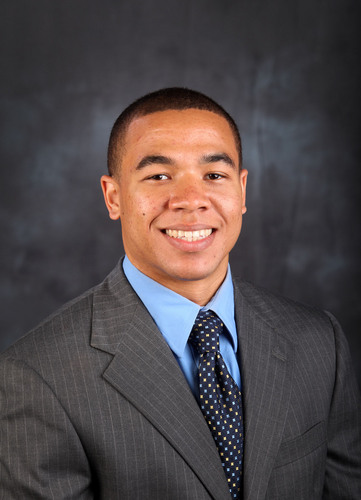

Interview with Ed Aschoff: ESPN.com SEC Blogger
Morgan Moriarty talked with Ed Aschoff about what it takes to make it in the sports journalism business. Aschoff joined ESPN.com in 2011 after spending four years covering the University of Florida for The Gainesville Sun. He grew up in Oxford, Miss., before attending UF, graduating with a B.S. in journalism.
You started out at the Gainesville Sun. How did you get that job, and what was it like?
“I was working for Rivals.com, their Florida site, during recruiting and just stories here and there about the team. So I had some clips already and I had a pretty good grasp on the Florida beat. I was pretty young, but the thing that really helped me was when I took Sports Reporting with Jason Cole. He really helped me find my voice and helped me realize what it took to be a real journalist. When I was in his class, I started covering the beat a little more and I got used to the everyday thing. Basically he stuck his neck out there, and when The Sun was looking to expand its football coverage he said I was somebody that I should take a look at and everything. So they brought me in for an interview and I talked to them for a little bit and they started me off as a freelancer. My first couple of assignments were Q&A’s but eventually I was basically the #3 guy covering football and the #2 guy covering basketball, and I covered baseball. But it really started out with Jason Cole putting his neck out there and kind of helping me in that class really learning how to cover a beat.”